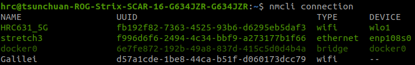

3-3. SSH over ETH¶
沒有 router 的場景中，使用 Ethernet 實體連線通訊是最直接穩定的方式。
FYI
下方紀錄使用場景為：Linux Host OS --- ETH --- Linux Robot (Stretch 3)
3-1. procedure¶
與 Wi-Fi SSH 流程幾乎相同，只差在要手動設定靜態 IP。
- Connect two Linux devices via Ethernet.
- Set static IP addresses.
- Enable SSH.
- Connect using VSCode's Remote SSH extension.
3-2. static IP setup¶
插入乙太網路後，透過
nmcli設定靜態 IP。
-
檢查連線狀態：
sudo nmcli connection。幾點注意：
- 每行列出項目為一網路連線的設定，UUID 是各規則的唯一識別碼。
- 綠色表正在使用；白灰色為已儲存，但目前沒被使用的規則。
- ETH 實體連線時會套用已存在規則。
若不存在 ETH 規則會自動創建，通常是Wired connection 1。
example

-
分別修改 local host 和 remote host 的規則，以設定雙方 IP 位址。
設定完後請ping彼此的 IP 測試連線。-
local host (192.168.10.1)
-
remote host (192.168.10.2)
-
至此即設定完成，其餘 SSH 基本操作省略。
3-3. common commands¶
以下是一些 nmcli 其他常見功能。
-
修改規則名稱。
example

-
顯示規則。
-
切換規則。